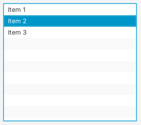
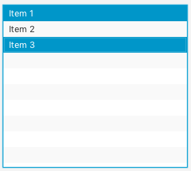

JavaFX ListView
El control ListView de JavaFX permite a los usuarios elegir una o más opciones de una lista predefinida de opciones.
El control ListView de JavaFX está representado por la clase javafx.scene.control.ListView.
Creación de una vista de lista
Se crea un ListView simplemente instanciando un objeto de la clase ListView. Por ejemplo:
ListView listView = new ListView();Agregar elementos a un ListView
Podemos añadir elementos (opciones) a ListView debemos recuperar su colección de elementos (con getItems()) y añadirle elementos (con add(String). Por ejemplo:
listView.getItems().add("Elemento 1");
listView.getItems().add("Elemento 2");
listView.getItems().add("Elemento 3");Con SceneBuilder, arrastraremos el control hasta nuestra escena, no tenemos ningún campo con que rellenar nuestras opciones.
En el método initialize del controlador añadiremos las opciones al control y marcaremos la opción más probable como seleccionada, por ejemplo:
@Override
public void initialize(URL url, ResourceBundle rb) {
// TODO
dpto.getItems().add("Personal");
dpto.getItems().add("Informática");
dpto.getItems().add("Comercial");
dpto.getSelectionModel().selectFirst();
}Agregar un ListView al gráfico de escena
Para hacer visible un ListView, debemos añadirlo al gráfico de escena. Esto significa que se debe añadir ListView a un objeto de escena o a algún componente de diseño que luego se adjunta al objeto de escena.
Por ejemplo:
ListView listView = new ListView();
listView.getItems().add("Item 1");
listView.getItems().add("Item 2");
listView.getItems().add("Item 3");
HBox hbox = new HBox(listView);
Scene scene = new Scene(hbox, 300, 120);
primaryStage.setScene(scene);
primaryStage.show();El resultado:

ListView muestra varias opciones de forma predeterminada. Podemos establecer una altura y un ancho para un ListView, pero no podemos establecer explícitamente cuántos elementos deben estar visibles. La altura determina eso en función de la altura de cada elemento que se muestra.
Si hay más elementos en ListView de los que pueden caber en su área visible, ListView añadirá barras de desplazamiento para que el usuario pueda desplazarse hacia arriba y hacia abajo sobre los elementos.
Lectura del valor seleccionado
Podemos leer los índices seleccionados de un ListView a través de su SelectionModel (getSelectionModel()). Aquí hay un ejemplo que muestra cómo leer los índices seleccionados de un ListView de JavaFX (método getSelectedIndex):
ObservableList selectedIndices =
listView.getSelectionModel().getSelectedIndex();Recibiremos una colección de JavaFX de tipo ObservableList.
ObservableList contendrá objetos Integer que representan los índices de los elementos seleccionados en ListView.
Para permitir que se seleccionen varios elementos en ListView, se debe establecer el modo de selección correspondiente en el modelo de selección de ListView. Para ello:
listView.getSelectionModel().setSelectionMode(SelectionMode.MULTIPLE);Una vez que haya configurado SelectionMode.MULTIPLE en el modelo de selección ListView, el usuario puede seleccionar varios elementos en ListView manteniendo presionada la tecla MAYÚS o CTRL al seleccionar elementos adicionales después del primer elemento seleccionado.
Por ejemplo:
listView01.getSelectionModel().setSelectionMode(SelectionMode.MULTIPLE);
...
ObservableList selectedIndices = listView.getSelectionModel().getSelectedIndices();
for(Object o : selectedIndices){
System.out.println("o = " + o + " (" + o.getClass() + ")");
}El resultado:

o = 0 (class java.lang.Integer)
o = 2 (class java.lang.Integer)